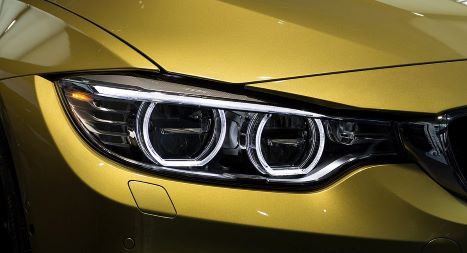

Headlights are typically made of polycarbonate plastic, which can be affected by UV rays, environmental factors, and oxidation. This causes the headlights to become cloudy or yellowed over time.
-
We are here to present high quality service and allow our work to exceed all expectations of professionalism and integrity
-
We provide fast and friendly mobile service because we know your time is expensive
-
Our company work only with the high quality products which are used big brand companies


Why we're so special
Headlights Forever is professional car headlight restoration in Central London. Our expert team is dedicated to restoring the clarity and appearance of your headlights, ensuring optimal visibility and safety on the roads. Using premium quality chemicals is the fastest and the most efficient method to get your headlights looking like brand new for ages.